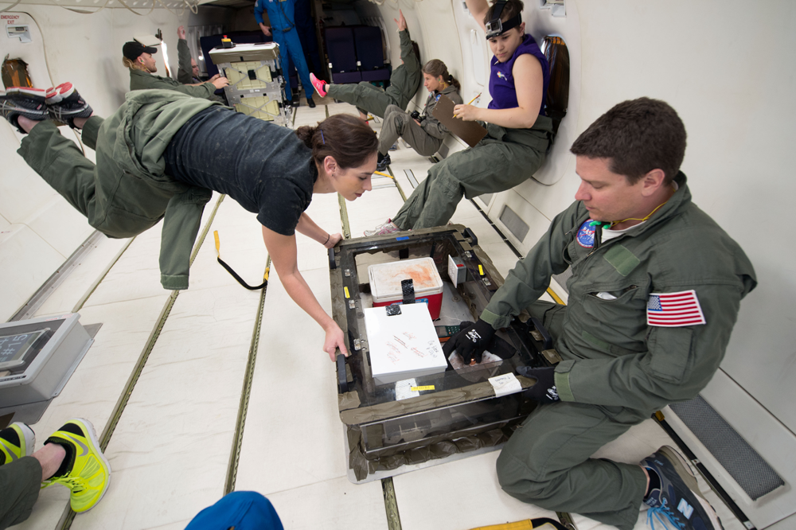
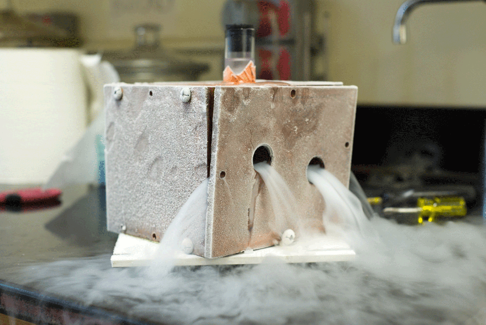
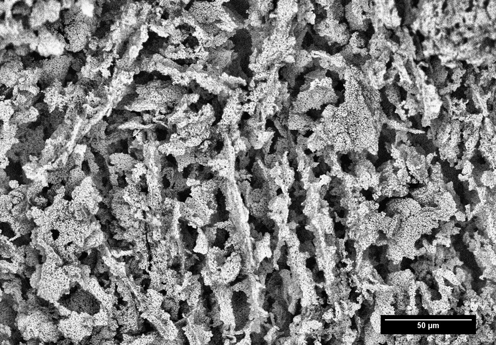

Six miles above the Gulf of Mexico, Krysti Scotti presses her bright orange tennis shoes firmly against the white interior wall of NASA’s C-9 airplane. Here in zero gravity, where easy tasks become difficult and difficult tasks become nearly impossible, Scotti must come up with creative ways of keeping herself in place: by contorting her body into positions straight out of a child’s game of Twister.
While the plane descends 10,000 feet in roughly 30 seconds, Scotti freezes a slurry of ice and titanium oxide nanoparticles by placing the mixture inside a small, cold copper box while trying to maintain her position.
Felicia Teller, one of Scotti’s teammates and a fellow Northwestern School of Continuing Studies student, battles zero gravity’s effects as she clutches a spiral-bound notebook. Others, suspended in midair, spin in circles while grasping a thin strap that runs along the wall of the plane. Scotti’s long black hair floats haphazardly.
The area inside the C-9 is contained chaos.
“I tend to get in a zone and everything is kind of slow-motion-like,” Scotti says of zero gravity. “It’s hard to remember actual feelings during that time. And since we need to use our hands, we brace ourselves in goofy configurations.”
Scotti, who is 34 years old, has flown twice in zero gravity – most recently as part of the Flight Opportunities Program (FOP), a NASA-run operation in which teams like the one Scotti has led for the last two years conduct research that would not be possible on Earth’s surface. As a much cheaper alternative to spaceflight, teams fly in the C-9, an aerodynamic jet that travels in a series of parabolas to achieve zero gravity within Earth’s atmosphere for brief 30-second periods.
"They said, '... This is a once-in-a-lifetime opportunity ... And right after I heard that I was like, ‘Well, now I have to figure out how to go back.'" - Krysti Scotti
Scotti first flew – floated, rather – in June 2012, six months after she had transferred to Northwestern from Harper College, a community college in Palatine, Illinois, about 20 miles west of Northwestern’s campus. Before that, Scotti worked at a transportation company called ABF Freight, where she was promoted to credit manager – a position that technically required a degree Scotti lacked, prompting her to take night classes at Harper. She then landed an internship at the Marshall Space Flight Center in Alabama (NASA’s rocketry and spacecraft propulsion research facility) and proposed an experiment to study aluminum and silver oxide nanoporous foams in zero gravity. In January 2012, Scotti transferred to Northwestern on a scholarship worth more than $100,000 and finally traveled to Houston that summer.
For her first reduced gravity flight, Scotti and a team of her fellow Community College Aerospace Scholars from the Marshall Center created metallic nanofoams through combustion synthesis, a self-propagating high-temperature process that uses aluminum and silver oxide as reagents. These nanofoams – a type of porous material with many microscopic openings – contain antimicrobial properties (ones that kill harmful microorganisms) that would be enhanced if constructed in zero gravity and in turn be used to help regrow damaged tissue. This research preceded the project that Scotti would initiate at Northwestern, one that morphed out of her initial work on metallic nanofoams.
In the moments before Scotti’s first flight, she and her teammates sat in a briefing room at Ellington Airport, where the FOP is based, and endured Houston’s scorching June heat. The program mission managers – those who brief research teams pre-flight, give final approval to fly and oversee experiments – delivered a message that would stick with Scotti and shape the next three years of her life.
“They said, ‘Make sure when you get up there you take a minute to look around and look at everybody around you and look at your environment and really take it in,’” Scotti says. “Because this is a once-in-a-lifetime opportunity ... And right after I heard that I was like, ‘Well, now I have to figure out how to go back.’”

From left to right: Felicia Teller, Amelia Plunk and Bryce Tappan in the process of freeze-casting. / Photo courtesy of NASA/James Blair
In May 2014, Scotti met with Dr. David Dunand, a materials science and engineering professor whose research focuses in part on metallic foams like the ones Scotti had previously used. For her new project, Scotti initially wanted to use combustion synthesis again, this time to create better solar cell electrode materials. But combustion synthesis was often unreliable and offered Scotti little control in her experiments. She needed a new fabrication method, so she turned to Dunand.
Dunand grew up in Switzerland, the birthplace of dye-sensitized solar cells (DSSCs) – the types of cells for which Scotti wanted to create better electrodes. Though DSSCs are cheap and simple to manufacture, they are inefficient relative to monocrystalline solar cells, which make up the panels found on most house rooftops.
While monocrystalline cells convert upwards of 20 percent of the light they absorb into electrical power, DSSCs reach just over 10 percent.
“They don’t do a great job of transferring the electrons they capture from light into whatever system they’re trying to insert it into,” says Kimberly Clinch, a Weinberg junior and former lead engineer on Scotti’s team. “The base of the solar cell is [made up of] a porous foam material, and with all these random holes going through it, the electrons bounce around and get lost and then it’s hard for them to travel straight to where they need to go.”
Like other solar cells, DSSCs convert energy from the sun into an electric current, which is generated through titanium dioxide, a cheap pigment commonly found in white paint. The titanium dioxide is coated with dye that absorbs incoming photons, or light particles, and excites the electrons into a higher energy state, much like chlorophyll in photosynthesis. The titanium dioxide then conducts the electrons toward an electrolyte solution in the cell, which closes the circuit by returning the electrons to the dye, creating a current.
In zero gravity, if Scotti were able to fabricate better electrodes, she would then, theoretically, improve the DSSC’s efficiency.
“We were trying to increase the orderliness of those pores,” Clinch says. “And our hypothesis was that if you manufactured the foam in [zero] gravity, you would get that orderliness that you wanted.”
But with combustion synthesis off the table, Scotti needed to find a way to construct foams in zero gravity. When she posed the issue to Dunand, he suggested an alternative method: freeze-casting.
Freeze-casting begins with a mixture of water and titanium oxide nanoparticles, which Scotti’s team prepares before the zero gravity flights. Then, once airborne, a team member places the mixture inside a small container which then goes into a very cold copper box.
"I couldn’t sleep ... I was too excited, and every paper I read made me more excited." – Krysti Scotti recalls the weeks leading up to her first zero-gravity flight.
At this point, the liquid at the bottom of the container – nearest to the cold copper – begins to freeze, creating branches of ice crystals called dendrites. The dendrites shoot to the top of the container, pushing the titanium oxide particles out of the way like bumper cars. The particles gather around the dendrites to avoid getting pushed around, and by the time the dendrites stop growing, the particles have filled in the spaces between the dendrites.
On Earth’s surface, gravity doesn’t allow the dendrites to grow as straight. But free from gravity’s constraints, the branches of ice shoot up in straight lines. This allows the particles to gather in a more orderly fashion, thus making the electron’s journey more efficient and increasing the cell’s efficiency.
“During the [flight], we can study the effects of the absence and presence of gravity on the growth of the ice and on the settling of the particles,” Dunand says. “The idea is twofold. One is to get a better understanding of zero-g, because if we understand zero-g, we can better understand what happens here on Earth under one-g. It’s a way to understand and make the process here on Earth better.
“Two is to actually think long term and maybe in the future – say 20, 40, 50 years from now – produce solar cells in orbit, under zero-g, for satellites or places where people live. For that, we need to understand how they work under zero g.”
Two months before she first freeze-casted on the C-9 airplane, Scotti left Dunand’s office and spent her entire walk home researching freeze-casting on Google.
“I couldn’t sleep,” Scotti says. “I was too excited, and every paper I read made me more excited.”
In February 2013, more than a year before her meeting with Dunand, Scotti had submitted her proposal to the FOP to create titanium-based nanofoams for DSSC electrodes. Four months later, NASA selected the proposal, scheduling Scotti and her team to fly in zero gravity in July 2014, two years after her first flight.
By that point, Scotti had already compiled a team of students for the project. In one of her School of Continuing Studies biolab classes she met Felicia Teller, a 27-year-old New York native working on her post-baccalaureate degree. Teller would help Scotti develop the method for freeze-casting samples within the 30-second window afforded by zero gravity flights.
But getting others on board proved difficult. Scotti was drawing from a pool of students who, unlike her colleagues at the Marshall Center, were not all in the same place for the express purpose of immersing themselves in the world of aerospace.
“I had a hard time finding people because, apparently, students at Northwestern are a little busy,” Scotti jokes.
In January 2014, Scotti emailed the listserv for an engineering club called NUSTARS (Space Technology and Rocketry Society) asking for help on her project. The first to respond was Clinch, a then-McCormick freshman (now studying integrated science in Weinberg) who quickly became lead engineer on the project.
Clinch reached out to her friend, then-McCormick sophomore Emily Northard, and the two teamed up to create the copper block that would go inside the box used for freeze-casting. The block had to be removable so the team could soak it in dry ice just before the flights, allowing the block to stay cool – which was especially important for the mid-90s summer weather in Houston, where the team would travel in July.

Forming the crystal structure requires frigid temperatures. The containing copper box is cooled to the proper temperature with liquid nitrogen at negative 321 degrees Fahrenheit. / Photo by Alexis O'Connor
Bobby Roe is a busy man. As a missions manager of the FOP – the operation that accepts flight proposals, then sponsors and directs the flight teams in Houston – Roe manages, by his estimation, about 100 different teams. He coordinated with Scotti’s team before it arrived in Houston to decide on flight times and dates, how many parabolas the team needed for each flight, and how many people would be on the plane at a given time.
The team – made up of Scotti, Northard, Clinch, Teller, Dunand and a chemist from the Los Alamos National Laboratory in New Mexico named Bryce Tappan – flew out of Ellington Airport, which sits in the southeast part of Texas about half an hour outside of downtown Houston and houses many of NASA’s high-altitude aircraft, including the C-9.
On July 23, Scotti’s team touched down in Houston and made it to Ellington the following day – a little late after the taxi that picked them up from their nearby hotel got lost, marking a foreboding start to a hectic trip.
“You’re running around like a chicken with your head cut off getting all your T’s crossed and your I’s dotted,” Scotti says. “It’s crazy. It’s difficult to even recount because you’re so busy from the time that you get there to the time you leave.”
Each flight team generally spends a week in Houston. The first two days involve a “hardware review” – where Roe checks out and approves the materials each team uses on the plane – and a Test Readiness Review, the same meeting at which Scotti’s mission manager ironically told her about the “once in a lifetime opportunity” she was now about to embark on for the second time.
"It just takes you by surprise ... It’s not something you can easily prepare for." - Emily Northard on the sensation of weightlessness
Scotti’s team was scheduled for its first flight on Monday, but rain clouds, thunder and lightning over the Gulf created too much turbulence to fly in smooth parabolas. The team packed two flights into one marathon Tuesday.
But the work didn’t stop back at the hotel. Freeze-casting requires heavy preparation, and Scotti and her team had to put together the titanium oxide slurry mixtures the day before the flights. That meant working in the hotel room until as late as 3 a.m., then making it back to Ellington by 7 a.m. the following morning.
“It’s essentially no sleep and a lot of stress,” Scotti says. “But you’re in a zone the whole time. You’re not upset – but it’s exhausting.”
Former International Space Station Commander Chris Hadfield once compared loosening a bolt with a wrench in zero gravity to changing a tire while wearing ice skates and goalie mitts on Earth. Imagine doing that on four hours of sleep for three days in a row in sweltering heat.
But at the same time, many people dream of flying in zero gravity at least once. This wasn’t a time to let months of work go to waste. Plus, it was kind of fun.
The team spent the first few parabolas getting used to this unique, new sensation. When the plane reached the air over the Gulf of Mexico, everyone moved from their seats to the experiment area, a mostly empty space in the plane where the freeze-casting took place.
To reach zero gravity, the C-9 flies parallel to Earth’s horizon around 24,000 feet above the surface, then pulls up at a gradually increasing angle until the aircraft reaches roughly 45 degrees in relation to the horizon and an altitude of about 34,000 feet. While the plane climbed, Scotti’s team felt up to two g’s of force, giving them the sensation that they weighed twice as much as they would while standing on Earth’s surface.
Then, when the C-9 reaches the peak of its parabolic arc, it “pushes over,” or makes a rapid descent for about 10,000 feet. At this point, the team felt the sensation of weightlessness.
“It just takes you by surprise,” Northard says. “It’s not something you can easily prepare for.”
Dunand compares the sensation of zero gravity to scuba diving without the water. Teller says it’s like the top of a roller coaster, only for a much longer period of time.
“There were a lot of things that I remember seeing on the plane that you just don’t really think about,” Teller says. “I saw a bubble of liquid just, like, floating away. I saw a nut start turning in the air slowly, just crazy things like that.”
Because the centrifugal force acting on the plane and its contents “cancels out” all the gravitational force that would normally pull those in the aircraft downward, microgravity – a more accurate way of referring to zero gravity – occurs as those inside the C-9 experience about as close to zero g’s as they could get.
“What was kind of weird for me was, maybe after two or three parabolas, microgravity started to feel more normal than anything,” Clinch says. “At first I needed to get used to how to control my body, when there was nothing forcing it in any direction. Once you got into position, figured out what arrangement of straps you wanted to use to hold yourself so you could do work, microgravity became more comfortable.”

The titanium dioxide crystal structure can only be seen under a powerful microscope. To the naked eye, it appears to be simple white paint. / Photo courtesy of Space Ice
During the four zero gravity flights, Scotti and her team collected 221 samples of frozen slurry. The hardest part came next: analyzing each sample.
The team transported the samples back to Northwestern, dehydrated them using the freeze dryer and baked them to keep the titanium oxide particles in place. Once the samples were ready to go, they were placed under an electron microscope. The painfully slow process of studying every sample took about a year.
But for Scotti’s team, the tedium was worth it. They found that the pores in the foam samples aligned almost perfectly perpendicular to the surface they were frozen on in the plane. This provided the team with exactly the results they hoped for, though they still wanted to further study the relationship between gravity and the solidification of the samples.
In June 2015, Scotti’s team returned to Houston for another flight week, only this time to fly in a few different levels of gravity – including lunar gravity, the same condition as if you were walking on the moon.
The team also had a slightly different look: Clinch left late in 2014. Scotti was diagnosed with an autonomic nervous system disorder, which kept her off the flight. She brought on Amelia Plunk, then a third-year NU student pursuing a master’s in materials science and a member of Dunand’s research group, to fill her spot. Northard led the team in Scotti’s place, less than two years after joining the team as an engineer “knowing basically nothing about materials science,” as she puts it.
“Obviously I was very upset about not being able to go,” Scotti says. “[But] I didn’t have a question in my mind that Emily would be able to do everything, and she did.”
"We’re essentially combining over three centuries of scientific discovery in an attempt to answer fundamental questions about how the universe works. Who knows what we’ll learn?" – Krysti Scotti
The idea with the second flight was to learn more about how gravity impacts the way the foams form by gathering more (and different) data to better model the relationship. This understanding is important for discovering how to efficiently manufacture the solar cell components back on Earth, but also for the team’s other, greater ambition: sending the experiment to the International Space Station (ISS) for additional and more involved testing – where you have days of zero gravity instead of 30-second periods.
During the second trip, Scotti’s team toured NanoRacks, a private research company that funds and coordinates transportation to the ISS, from which the team has since secured sponsorship.
But once on the ISS, the project will be out of Scotti’s team’s hands. At that point, they will be closer than ever to reaching their objective – which can become hazy and indistinct in the midst of a complex project like this.
Though Scotti acknowledges she couldn’t realistically make electrodes in microgravity for commercial purposes – the cost of flying would far outweigh the profit generated by the electrodes – she sees another, more long-term function of her team’s work.
“If you do make them better, then you can learn how they got better, and then maybe make modifications on the ground that will allow you to get something similar,” Scotti says.
By nature, Scotti is an explorer. Her insatiable desire to always know more and to push boundaries – her “scientific vision,” as Tappan describes it – has driven the project forward from the beginning.
“There are tons of unknowns; the implications are incredibly diverse,” Scotti says. “We’re essentially combining over three centuries of scientific discovery in an attempt to answer fundamental questions about how the universe works. Who knows what we’ll learn?”